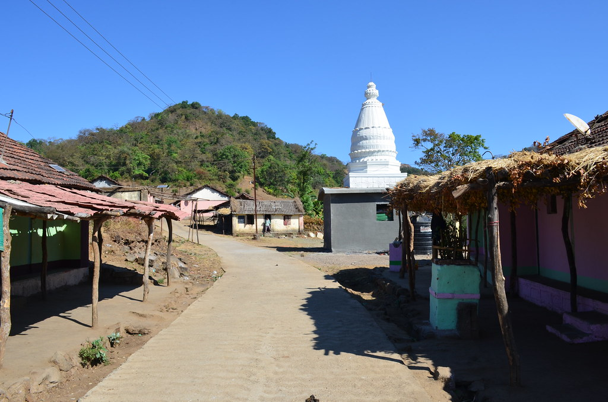
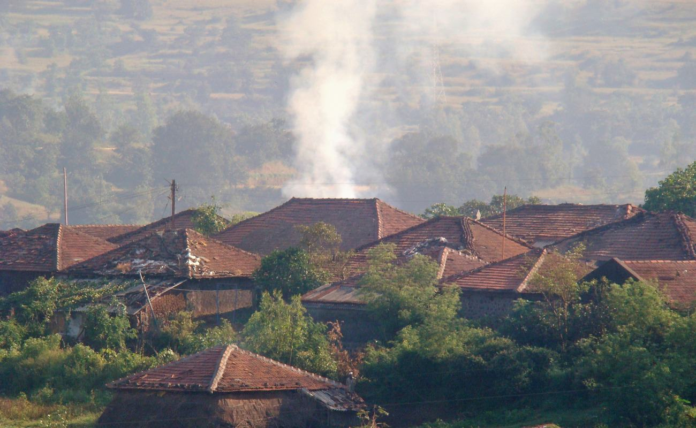

Explore the Hidden Villages of Maharashtra
Discover the magical villlages of Maharashtra, surrounded by lush green forests, misty mountains, and peaceful valleys. Explore nature's hidden beauty and find your next adventure.
Explore More...
Explore Waterfalls Temples Villages Food
1. Bhorigiri Village
Bhorgiri is a Village in Khed Taluka in Pune District of Maharashtra State, India. It belongs to Desh or Paschim Maharashtra region . It belongs to Pune Division .
Bhorgiri is a small yet distinct village nestled in the Khed tehsil of Pune district, within the Indian state of Maharashtra. Bhorgiri is known for its charm, contributes to the cultural and demographic richness of the Pune district.

2. Samrada Village
Samrad is a small hamlet ringed by Sahyadri peaks, and in the monsoon it sits inside the weather rather than under it. Cloud pours over the ridgelines and drains into the valley all day. For photographers, it’s one of the most dramatic settings in the state.
Samrad is a village located in Akole tehsil of Ahilyanagar district, Maharashtra, India. It is approximately 65 km from Akola and around 190 km from Ahmadnagar. Samrad is also a designated Village Panchayat, headed by an elected Sarpanch.

3. Bhira Village
Bhira is a town in Maharashtra that is well-known for its hydropower projects. The village dates back to 1927 and is famous for establishing Tata's hydro generation projects. Bhira village, located in the Raigad district of Maharashtra, is one of the state's unexplored rural areas.
The undiscovered beauty of Bhira has a rural feel to it. The majority of the budget is earmarked for power projects. The rest of Bhira comprises the Kundalika River, the Bhira Dam, the Devkund waterfall, and lush green forests.

4. Purushwadi
Purushwadi is a village located in Akole tehsil of Ahilyanagar district, Maharashtra, India. It is approximately 30 km from Akola and around 150 km from Ahmadnagar.
This tribal village is inhabited by the ‘Hindu Mahadeo Koli’ tribe. Renowned for as rice cultivators and as skilled animal herdsmen; these villagers are warm, simple & full of wonder.